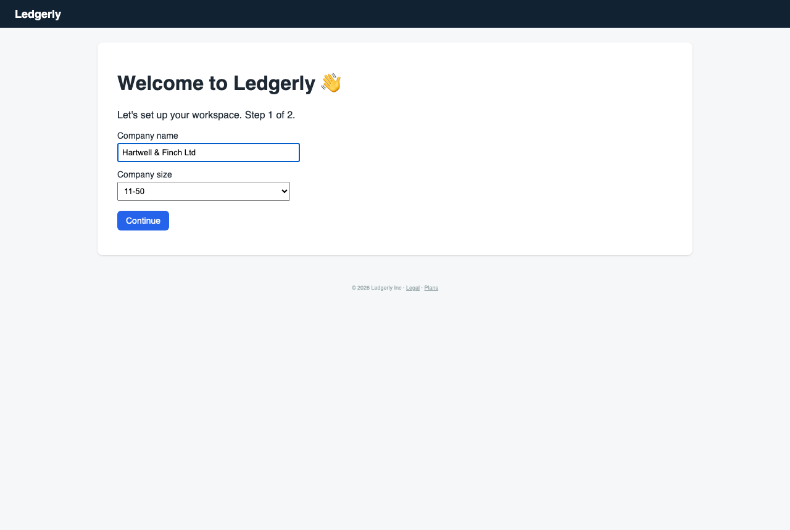
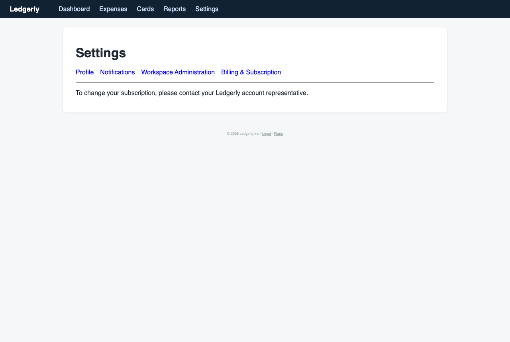
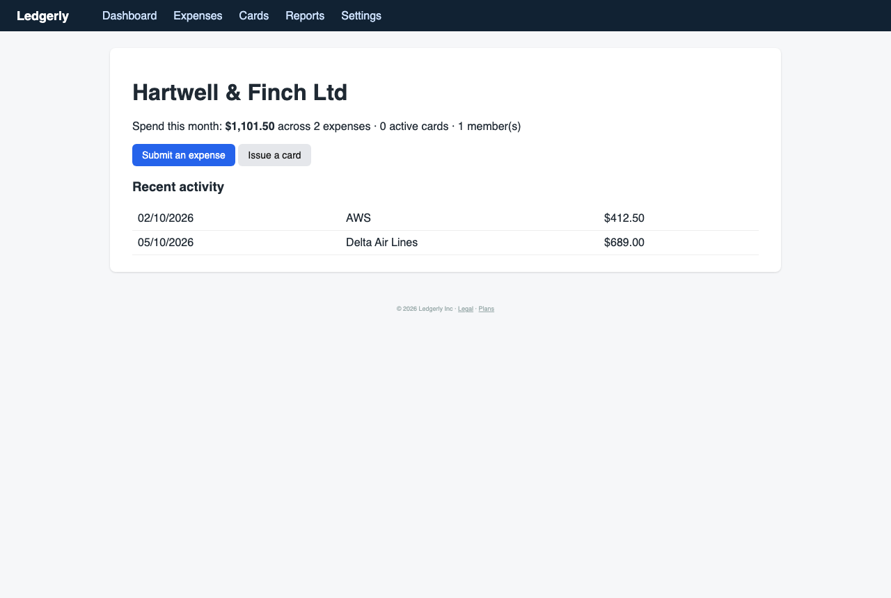

Helen the Cautious Office Manager — Office and operations manager at a 15-person company, asked to handle expenses on top of her usual duties
You have been asked to take over company cards and expense approvals, but you have never done it and are worried about making a costly mistake. You follow instructions exactly and want to be sure before clicking anything that spends or shares money.
abandonedcareful patience 4/515 steps
Debrief
Would not keep using it · score 3/10 — I couldn't finish any of the three jobs. I got blocked on staff setup by jargon and unknown costs. I couldn't find my coworker's expense. I never saw how card limits work. I'd only come back with Ken's answers, or if the staff setup, approvals and cards were explained in plain language.
| Goal | Outcome | Notes |
|---|---|---|
| Add our staff so they can each submit their own expenses | abandoned | I found the Seats & Provisioning page, but it asked for a 'Principal identifier' and an 'Entitlement'. I couldn't tell whether 'Provision seat' costs money or what Submitter, Approver and Admin can do. Billing gave no prices. I added no one and stopped to ask Ken. |
| Approve the expense my coworker just submitted for office supplies | failed | The Expenses list and the Dashboard showed only AWS and Delta, both already Approved and both submitted by 'You'. There was no office supplies claim and no pending or approvals queue. I assume my coworker isn't in the workspace, since it shows only 1 member. |
| Order a card for our office manager account and make sure it has a spending limit | abandoned | I never opened the card flow. I saw an 'Issue a card' button on the Dashboard, but nothing said what it creates, who holds the card, or whether I'd see a limit before anything is made. Ordering a card needs Ken's sign-off, so I stopped. |
Frictions
- step 2: The accounting connection step says it is needed 'to continue', but there is a tiny 'remind me later' link.
Expected: A plain statement of whether I can skip this, and what happens to expenses if I do. · Happened: I had to guess that the small link skips the step. Nothing said whether it was safe or reversible. · Why it matters: Connecting QuickBooks, Xero or NetSuite shares company financial records, and that's Ken's call. If I wrongly believed it was required, I might have connected something I shouldn't.
- step 3: After setup, the Dashboard already showed $1,101.50 across 2 expenses (AWS, Delta) that I never entered, and only 1 member. There was no obvious 'add staff' prompt or next-steps checklist.
Expected: A clean starting dashboard with a prompt such as 'Invite your team'. Any sample data should be clearly labelled. · Happened: Unexplained expenses appeared, and I had to hunt through menus for where to add people. · Why it matters: I can't tell whether these figures are real company spend or demo data. I worry about reporting wrong numbers to my boss.
- step 5: Workspace Administration has sections named General, Seats & Provisioning, Ledger Mapping and Identity Federation. None is labelled 'Team' or 'People'.
Expected: A clearly named 'Team members' or 'Invite staff' section. · Happened: I had to guess which jargon-named section handles people. 'Identity Federation' sounded risky, so I avoided it. · Why it matters: I'm afraid of changing technical settings by accident. Adding staff is my first job, so the path to it should be obvious.
- step 6: The Seats page uses 'Principal identifier', 'Entitlement' and 'Provision seat', with no explanation of the Submitter, Approver and Admin roles.
Expected: A form with 'Name' and 'Email', plain role descriptions such as 'Submitter can file expenses but not approve them', and a note on whether it costs anything. · Happened: Jargon labels, no role descriptions, no cost information, and no hint of what happens when I click the button (does it email the person?). · Why it matters: I won't click anything that might create a charge or give someone too much access. I had to stop and ask my boss.
- step 7: Billing & Subscription shows only 'Trial, 13 days remaining'. It doesn't say whether seats cost extra or what happens when the trial ends.
Expected: Per-seat pricing, or a statement that seats are included in the trial. · Happened: No price information anywhere. · Why it matters: I can't tell Ken what adding 14 staff will cost, so I can't get the approval I need.
- step 8: 'Manage subscription' only says to contact an account representative, with no name, email or phone number.
Expected: Plan options and prices, or at least contact details for the representative. · Happened: A dead end that tells me to contact someone I don't know how to reach. · Why it matters: I have no way forward and can't get my cost question answered.
- step 11: The Expenses list shows only AWS and Delta, both 'Approved' and 'Submitted by You'. There is no office supplies claim and no pending tab or filter.
Expected: My coworker's office supplies claim with a 'Pending' status and an Approve button. · Happened: Nothing pending, and no explanation, such as 'your coworker needs to be added first'. · Why it matters: I can't approve what I can't find. I also don't know whether the claim was lost or was never submitted because my coworker isn't in the system.
- step 12: The Dashboard has no pending-approvals count or review queue.
Expected: A visible 'Needs your approval' area. · Happened: Only the spend total, the card count and the member count. · Why it matters: Approvals are a core part of my new job, and I need to know quickly whether anything is waiting.
- step 13: The 'Issue a card' button on the Dashboard doesn't say what it creates, who holds the card, or whether I can set a limit first or cancel the card afterwards.
Expected: A short explanation and a warning that a card will be created, with the spending limit shown before I confirm. · Happened: A bare button, with no limit, undo or cancel information visible. · Why it matters: A card is spendable money. I won't click anything permanent without seeing the limit and knowing it can be frozen or cancelled.
- step 4: My profile shows the name 'You' and the email you@company.com.
Expected: My real name and email from signup. · Happened: Placeholder details. · Why it matters: I wonder whether my account was set up correctly, and my coworkers would see 'You' as the approver.
Missing features
- A plain 'Invite team members' flow with name, email and a plain-language role picker, plus any cost shown up front — Staff setup is my first task, and I need to know roles and costs before I add anyone.
- Role descriptions (Submitter, Approver, Admin) in a tooltip or help text — I won't assign permissions I don't understand.
- Visible pricing, or a clear statement that seats are included in the trial — I need a number to take to my boss.
- A pending approvals queue, with a count on the Dashboard — Approving expenses is one of my main jobs.
- A guided setup checklist (add staff, approve expenses, issue a card) — I follow instructions step by step and didn't know what to do next.
- A card-creation preview showing the holder, limit and cancel options before confirming — I need to see consequences before I create anything that spends money.
- Help links or tooltips on jargon such as 'Ledger Mapping', 'Identity Federation' and 'Provisioning' — I look for a help link when I'm unsure, and I found none.
Liked
- The first setup page was simple: company name and size.
- Settings had clearly separated areas, and the Billing page was easy to find.
- The Dashboard summary (spend, cards, members) was easy to read.
- The Expenses list showed the amount, category, submitter and status clearly.
- Nothing irreversible happened to me by accident.
Replay — Goal → Action → Expectation → Result → Friction
Step 0 · http://127.0.0.1:8100/onboarding
Goal: Add our staff so they can each submit their own expenses
Thought: Okay, a welcome screen asking for the company name and size. I'll fill in the name first, then check the size since we have 15 people. I'm not sure yet whether this setup affects my money or just the account profile, so I'll read everything before I click Continue.
Action:
type #0 “Hartwell & Finch Ltd”Expectation: The company name field fills in, and then I can set the company size to 11-50 before continuing.
Result: Typed 'Hartwell & Finch Ltd' into the Company name field. The field now shows the name.

Step 1 · http://127.0.0.1:8100/onboarding
Goal: Add our staff so they can each submit their own expenses
Thought: The name is in. Now I need to change the company size from 1-10 to 11-50, since we have 15 people. I'll pick that from the dropdown before I hit Continue.
Action:
select #1 “11-50”Expectation: The company size dropdown changes to 11-50, and then I can click Continue.
Result: Selected 11-50 in the Company size dropdown. The dropdown now shows 11-50.
Step 2 · http://127.0.0.1:8100/onboarding
Goal: Add our staff so they can each submit their own expenses
Thought: Good, the name and size are both set. We have 15 people, so 11-50 is right. Before I continue, I'll check the Legal and Plans links to see if anything there affects what I'm agreeing to, but for now I'll just press Continue to move forward with the setup.
Action:
click #2Expectation: The page moves on to step 2 of the setup, where I should be able to add staff.
Result: Set company name to Hartwell & Finch Ltd and company size to 11-50, then clicked Continue. The page moved to 'Connect your accounting system'.
Friction (2/5): The page says I have to connect an accounting system 'to continue', but there's also a tiny 'remind me later' link. I don't know what skipping does to expenses. Connecting QuickBooks, Xero or NetSuite would send our money records somewhere, and that's a decision for my boss, not me.

Step 3 · http://127.0.0.1:8100/onboarding
Goal: Add our staff so they can each submit their own expenses
Thought: I'm not connecting our accounting system without Ken's OK. Connecting sends our financial records out, and I can't undo that on my own. The 'remind me later' link is the only safe option here. It's tiny text, though, so I'll take it and check what it means once I'm inside.
Action:
click #3Expectation: I skip the accounting connection and reach the main dashboard, where I should find a way to add staff members.
Result: Skipped the accounting connection with 'remind me later' and landed on the Dashboard. It shows 1 member, $1,101.50 spent across 2 expenses (AWS $412.50 and Delta Air Lines $689.00), and 0 active cards.
Friction (2/5): The dashboard shows 1 member, which is probably just me. I need to add the other staff, but I can't see where that is yet. The two expenses listed are not the office supplies one my coworker submitted, and I'm not sure why they're here. I also don't know whether skipping the accounting connection means these expenses aren't synced anywhere.

Step 4 · http://127.0.0.1:8100/dashboard
Goal: Add our staff so they can each submit their own expenses
Thought: Okay, I'm on the dashboard. I don't see an 'add staff' button, so I'll check Settings, since that's usually where people and permissions live. I'm not touching any card or expense until I understand what the two existing charges are, because I don't want to approve or move money by mistake.
Action:
click #4Expectation: The Settings page should have a team or members section where I can add my staff.
Result: Clicked Settings from the dashboard. It opened a Settings page with Profile fields (Your name 'You', email you@company.com, timezone UTC) and links for Notifications, Workspace Administration and Billing & Subscription.
Friction (2/5): No staff or team section is on the Profile page. The likely place is 'Workspace Administration', but I'm not sure it's the right one, and the name still says 'You' rather than my actual name, which makes me wonder whether my profile is set up correctly.

Step 5 · http://127.0.0.1:8100/settings
Goal: Add our staff so they can each submit their own expenses
Thought: Team members are probably under Workspace Administration. I'll open that and read it before adding anyone. Adding people is fine as long as it doesn't give anyone permission to spend money, and I'll check that first.
Action:
click #7Expectation: Workspace Administration should show a members list with an option to invite or add staff, and maybe role descriptions.
Result: Opened Workspace Administration. It has four sections: General, Seats & Provisioning, Ledger Mapping and Identity Federation.
Friction (2/5): I can't tell which section handles adding people. 'Seats & Provisioning' sounds like it's about people, but 'seats' could also mean paid licences, which could add a charge. 'Identity Federation' sounds like a technical login setup I don't understand, and I don't want to change anything there.

Step 6 · http://127.0.0.1:8100/settings/workspace
Goal: Add our staff so they can each submit their own expenses
Thought: 'Seats & Provisioning' is the most likely place for adding staff. Before I add anyone, I need to know whether seats cost money, because I can't approve extra charges without Ken. I'll open it and read it first.
Action:
click #10Expectation: A page listing seats and members, with a way to add people, and hopefully some info on whether seats cost extra.
Result: Opened Workspace Administration and then Seats & Provisioning. The page lists only you@company.com as Owner, with a 'Principal identifier' box, an 'Entitlement' dropdown (Submitter, Approver, Admin) and a 'Provision seat' button.
Friction (3/5): I expected a simple 'Add staff member' form with name and email. Instead I see 'Principal identifier' and 'Entitlement', which mean nothing to me. 'Provision seat' sounds like it could add a paid licence, and I don't know whether that costs money. I also don't have a list of staff emails with me, and I'm not adding anyone without knowing what it costs and what each role can do.

Step 7 · http://127.0.0.1:8100/settings/workspace/seats
Goal: Add our staff so they can each submit their own expenses
Thought: I'm not pressing 'Provision seat' yet. If a seat is a paid licence, that's a spending decision and it's Ken's to approve. I also don't want to give anyone Approver or Admin by mistake, since that could let people approve or move money. Before I touch this, I'll check the Billing page for what a seat costs.
Action:
click #8Expectation: The Billing & Subscription page should say whether extra seats cost money and how much.
Result: Opened Billing & Subscription. It says the current plan is Trial with 13 days remaining, and has a 'Manage subscription' link. It doesn't say whether seats cost extra.
Friction (3/5): The billing page doesn't say what an extra seat costs, so I still can't tell if adding staff creates a charge. 'Manage subscription' could be where I'd find pricing, but it might also be where I'd commit to a paid plan, and I don't want to do that without Ken.

Step 8 · http://127.0.0.1:8100/settings/billing
Goal: Add our staff so they can each submit their own expenses
Thought: I still don't know if seats cost money, and I'm not going to find out by guessing. I'll check 'Manage subscription' just to read the pricing, and I won't confirm anything. If it turns out to be a purchase screen I'm backing out.
Action:
click #9Expectation: A page showing plan options and prices, possibly with a per-seat cost. I expect to be able to read it without committing to anything.
Result: Clicked 'Manage subscription'. It only says: 'To change your subscription, please contact your Ledgerly account representative.' No prices, no seat costs, and no way to change anything from this screen.
Friction (3/5): I still don't know whether adding staff seats costs money. The only route to pricing is a sales representative I don't have contact details for, and nothing here tells me what a seat costs or whether Trial covers extra staff.

Step 9 · http://127.0.0.1:8100/settings/billing/manage
Goal: Add our staff so they can each submit their own expenses
Thought: I can't find out the cost of a seat from this system, and I'm not going to provision people on a guess. I need to check with Ken first, and I should avoid pressing 'Provision seat' until he's confirmed the cost. I'll head back to Seats & Provisioning just to note what's there, without adding anyone.
Action:
navigate # /settings/workspace/seatsExpectation: I'll be back on the Seats page where I can see the form, but I won't submit anything until Ken confirms.
Result: Clicked 'Manage subscription' and got only: 'To change your subscription, please contact your Ledgerly account representative.' No prices or seat costs. I've now returned to Seats & Provisioning. It still shows only you@company.com as Owner, with the same empty form.
Friction (3/5): I can't find out whether a seat costs money from anywhere in this system, and nothing here tells me what Submitter, Approver or Admin can actually do. I have to ask Ken before adding anyone, and I'm not going to guess.

Step 10 · http://127.0.0.1:8100/settings/workspace/seats
Goal: Add our staff so they can each submit their own expenses
Thought: I'm stuck on the cost question. I'll give up on adding staff for now, and I'll write down what I need from Ken: whether seats are paid, who should get which role, and the staff emails. I'm not clicking 'Provision seat' with no cost info. Next I'll look at the expense approval goal, since that doesn't depend on seats.
Action:
give_up_goal #Expectation: I move on to approving the office supplies expense, and I'll come back to staff setup once Ken has confirmed the seat cost and roles.
Result: Still on the Seats & Provisioning page, which looks the same as before. I've given up on adding staff for now, pending Ken's answer on seat costs.
Friction (1/5): Nothing new on this page, but it's still not where I need to be. I want to find the office supplies expense in the Expenses section.

Step 11 · http://127.0.0.1:8100/settings/workspace/seats
Goal: Approve the expense my coworker just submitted for office supplies
Thought: Staff setup is parked until Ken confirms the cost and roles. Next I'll look at Expenses for the office supplies claim. I'll read it fully before approving anything, since approving spends money.
Action:
click #1Expectation: An Expenses list showing the office supplies claim from my coworker, with details like amount, submitter and status, and a clear Approve/Reject option.
Result: Opened the Expenses page. It lists only two items: AWS ($412.50, Software) and Delta Air Lines ($689.00, Travel). Both show 'Submitted by: You' and status 'Approved'. There is no office supplies claim from a coworker.
Friction (3/5): I expected to see my coworker's office supplies expense waiting for approval. Instead the list shows two items I didn't submit, both already marked Approved, and nothing pending. I can't approve something I can't find, and I don't want to approve anything on a guess about which claim is which.

Step 12 · http://127.0.0.1:8100/expenses
Goal: Approve the expense my coworker just submitted for office supplies
Thought: The office supplies claim isn't on this list. The two items here say 'You' and are already approved, which I didn't expect, and I don't know if that's the wrong account or a filter. I won't approve or change anything. I'll check the Dashboard for a pending approvals count before I decide what to do.
Action:
navigate # /dashboardExpectation: The Dashboard should show a pending approvals count or a list of claims waiting for review, including the office supplies expense.
Result: Went to the Dashboard. It shows 'Spend this month: $1,101.50 across 2 expenses · 0 active cards · 1 member(s)' and lists only AWS and Delta Air Lines, both approved. There's no pending approvals count and no office supplies claim anywhere.
Friction (4/5): The office supplies expense my coworker submitted isn't anywhere I can see: not in Expenses, not on the Dashboard. The workspace shows only 1 member, which is me, so I don't think my coworker is even set up in here yet. That suggests the claim may have been submitted somewhere else, or it never came through.

Step 13 · http://127.0.0.1:8100/dashboard
Goal: Approve the expense my coworker just submitted for office supplies
Thought: I can't approve what I can't see, and the workspace has only one member, so my coworker probably hasn't been set up. This ties back to the staff setup I parked. I'm not going to approve either of the existing approved items, since they aren't the one I'm meant to handle. I'll stop here on approvals and check with Ken about where the claim went.
Action:
give_up_goal #Expectation: I'll stop trying to approve this claim until Ken tells me where it was submitted, and I'll leave the card goal for later too, since issuing a card creates a company spending tool I need Ken to sign off on.
Result: I gave up on the approval goal. The Dashboard is unchanged: 'Spend this month: $1,101.50 across 2 expenses · 0 active cards · 1 member(s)', with only AWS and Delta Air Lines listed, both approved.
Friction (3/5): I can't see how to set a spending limit anywhere I've looked. The 'Issue a card' button doesn't say what it creates, who holds the card, or whether it can be cancelled. I expected a card form that shows the limit before anything is created, and I haven't found one.

Step 14 · http://127.0.0.1:8100/dashboard
Goal: Order a card for our office manager account and make sure it has a spending limit
Thought: I've now stopped on staff setup and on approvals, and I haven't found a clear way to set a limit on a card. Issuing a card creates real spending power, and I can't undo that if I get it wrong. I'm not going to click 'Issue a card' without Ken's approval and a clear answer on the limit. I'll stop here and send Ken a list of what I need from him.
Action:
finish #Expectation: I'm stopping for now. Ken will need to confirm seat costs and roles, explain where the office supplies claim went, and sign off on the card and its limit before I go further.
Result: